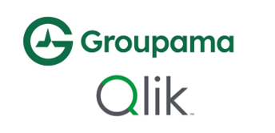

Prise en main de Qliksense
L’objectif de ce projet était de mettre en place un tableau de bord dynamique et interactif destiné à des chargés de clientèle chez Groupama, en utilisant l’outil Qliksense. Les fonctionnalités demandées pouvaient être décomposées en trois grandes parties. Premièrement, il fallait faciliter l’accès à l’information en proposant des filtrages à différentes échelles : géographique, par type de structure, ou encore par type de contrat. Différents indicateurs statistiques étaient à mettre en œuvre afin rendre compte de divers objectifs de résultats, tels que des taux de concrétisations de contrat, et le taux de signature électronique. L’activité de l’entreprise devait être pilotée depuis une page dédiée aux appels et prises de rendez-vous.
Ces différentes pages étaient coordonnées depuis un menu accompagné d’un glossaire expliquant le principe de fonctionnement de l’application. Les données fournies nous donnaient accès aux données des différentes structures de Groupama sur les trois dernières années. En utilisant ces données dans Qliksense, un schéma de base de données a été établi afin de faire lien entre les différents fichiers.
L’application finale produite était rendue attractive en réutilisant la charte graphique de l’entreprise. Une présentation orale du tableau de bord produit a été effectué pendant ce projet pour montrer nos avancements.
Compétences acquises :
- Création d’une interface dynamique
- Apprentissage de l’utilisation de Qliksense
- Préparation à une présentation orale
- Analyse et établissement du schéma d’une base de données
- Visualisation de données et sélection d’indicateurs adaptés au contexte
Illustrations

Logos de Groupama et Qliksense